Vizualization as a tool
The following books are the source material for these entries, accompanied by other recommended articles that are referenced at the end of this page.
The Functional Art
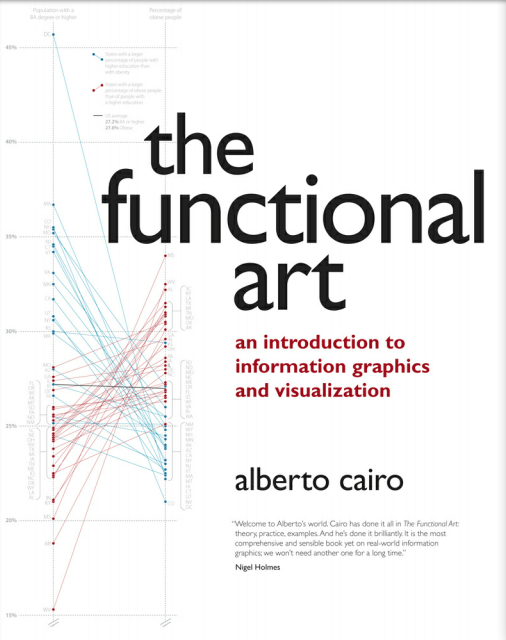How Charts Lie
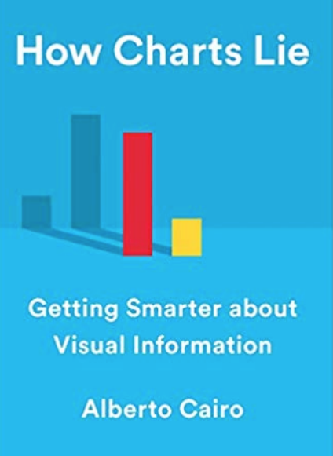The Truthful Art
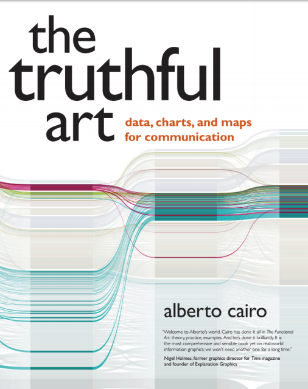BLOG ENTRY #10 | Apr. 6, 2020 | "The Functional Art", Chapter 9 and Profile:
BLOG ENTRY #9 | Mar. 30, 2020 | "The Functional Art", Chapter 8 and Profile:
BLOG ENTRY #8 | Mar. 23, 2020 | "The Functional Art", Introduction and Profile:
BLOG ENTRY #7 | Mar. 16, 2020 | "The Truthful Art", Chapter 12 | "The Functional Art", Profile:
BLOG ENTRY #6 | Mar. 9, 2020 | "The Truthful Art", Chapter 10 | "The Functional Art", Profile:
It is interesting to learn that while using precise data to create these data maps, it still does not translate to the human mind as per enabling very accurate judgments. Meaning that interpreters of the map can't estimate relative sizes very well, even if objects are proportionally sized among eachother. This circumstance that may fuss cartographers is likely explained by the Ebbinghaus illusion, where two circles are the same size as the center of a flower, for example, yet the size of the petals makes the middle circle look bigger or smaller. It serves as a peculiar lesson on proportion to illustrate the flaws in map reading by viewers.
In order to help vieweres see what is going on, while making the data readable in size and proportion of the graphic area available in the news or publication, several different map layouts need to be considered. For example, proportional maps may use circles in a proportional symbol map, or squares such as in a cartogram. These maps use area, and therefore need to address readability issues by adjusting transparency or scale down size in order to minimize clutter. In order to help the reader interpret proportion, a scale providing the largest circle or highest value down to the smallest circle or lowest value, and filling in the scale between them, while providing consistent increments in value, to help interpret the map with more clarity. In addition, by using a second variable layer in the map design, such as shading, will help in this multivariate scope by giving the reader more to discern. For example, this cartogram is a version of a proportional symbole map, using a multivariate application of shade, in order to reveal data by area being scaled up or down in reference to population of Catholics data.
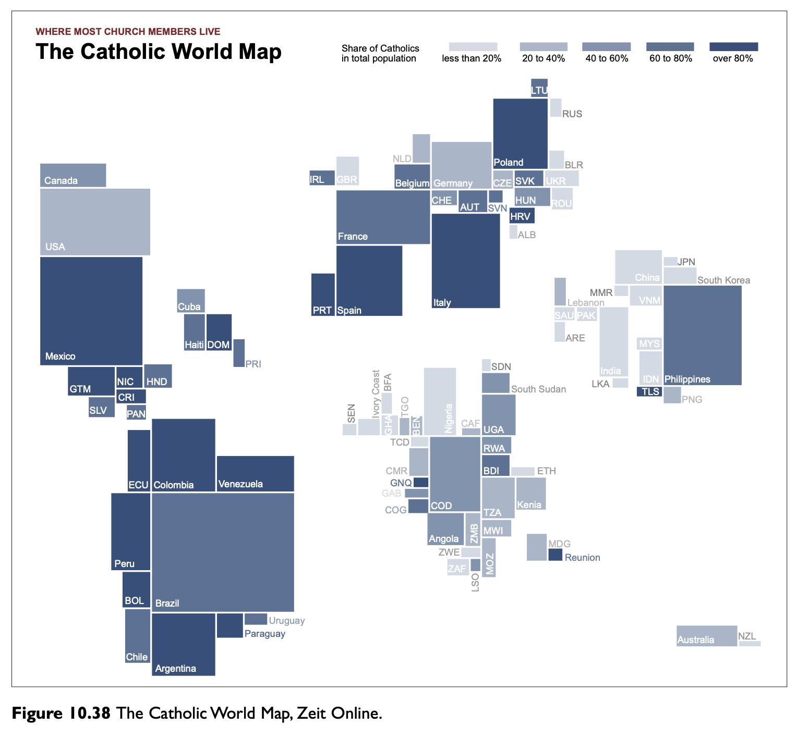BLOG ENTRY #5 | Mar. 2, 2020 | "The Truthful Art", Chapter 5 | "The Functional Art", Profile: Moritz Stefaner, "Truth and Beauty Operator"
It is tricky to visualize data, even when you know which tasks you want to accomplish. You may have all the concise data in front of you, and the ability to create the graphs using tools such as iNZight or RAWGraphs, yet still not be able to create a clear visualization to convey your message. It is difficult and requires much time to make your story readable with charts instead of words. The book suggests, "Plot what you need to plot. And if you don’t know what it is that you need to plot yet, plot many features of your data until the stories they may hide rise up." It is common practice among data designers, both newbie and experienced alike, to enter the data multiple times in different plot forms, switching x and y positions, and continuing to attempt several different types of charts, and many versions of the same charts, until you can see that the data makes sense from a comfortable glance. The idea is to make it friendly and easy for your readers, that is the goal where you know to have done a good job. There are tools, however, to help prompt designers in making better plotting choices from the beginning of their data drafting.
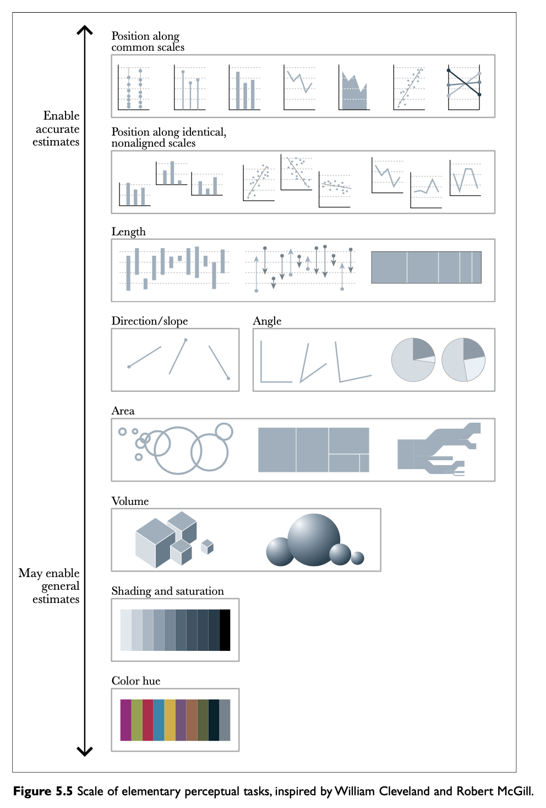These tools, such as the photo above, which is a version of Cleveland and McGill's "Scale of elementary perceptual tasks", help guide data graphic designers in visual accuracy choices. The authors of the scale above tested it in several experiments specifically for statistical data, and found that a typical reader can more easily perceive the information in the graphs positioned higher up on the scale, such as those using position, as the most accurate estimates in readibility. The graphs lower on the scale above, such as color hue and shading, are better employed for general data estimates. "The conclusion was that if you wish to create a successful chart, you need to construct it based on elementary tasks 'as high in the hierarchy as possible.'" This tool is a helpful indicator, however there are exceptions in accuracy given the context, for example, "data maps" belong to the lower part of the scale by using color hue and shading, however it depicts generally accurate data in that map context, which is highly accurate in its own right. New designers can use this scale as a reference to maneuver the level of accuracy and chart types while they lay a foundation to meet their overall goals.
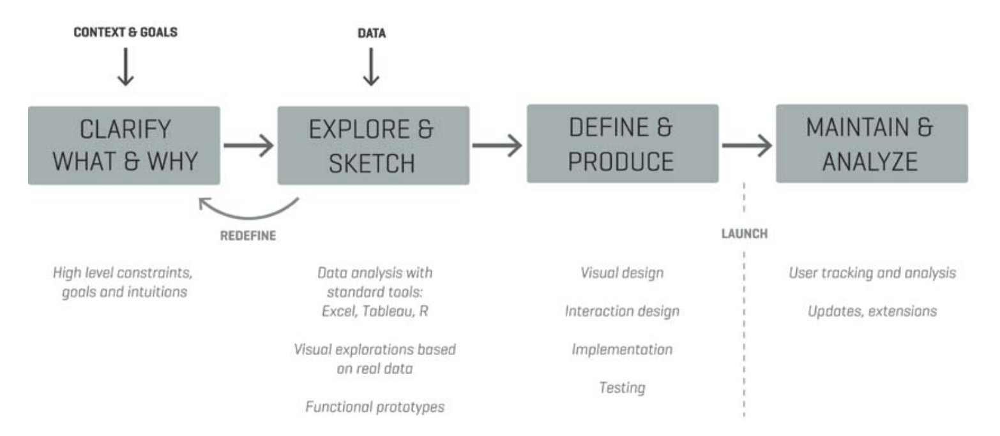While accuracy is crucial, balancing it with attractiveness is a skill that few professionals conquer in their own style. Moritz Stefaner brings truth and beauty to his projects, and reveals in the photo above his scientific approach to design, which later in the process allows for artistic creativity to develop. By implementing his cognitive science background, Stefaner guides himself through the steps above (image) in order to work diligently and goal-oriented while artisically with clients. Stefaner asks the client's goals, explores and sketches, and finds that sometimes the data the client thinks they have is in fact different from their perceptions. The first two steps in the process are intricately worked through to assess a solid foundation. By delving into the data available, making rough sketches, and considering the goals, the dozens of iterations of the drafts are proposed and mulled over to reach a truth point. From those conclusions of truth, then the project is actually defined on solid basis, and produced in consideration with visual appeal, i.e. beauty that makes sense. Based on the fleshed out research and goals, Stefaner is able to provide an end-point for his project, where analysis of results based on the primary goals can be assessed. The data science artist suggests to new designers, "I would recommend to get used to producing 10 to 20 different solutions to each challenge, to draw many sketches for any project. You need to be honest about which ones work and which ones don’t. Don’t be afraid to fail. Sometimes you’ll have a good hunch in the beginning, but more often you will need to look at many different variations of how to present the data using the right graphic forms. That’s the other crucial component to be successful in this business: You need to design a lot to become a good designer." This is comforting to a new designer, as per when the data in front seems to be all there, yet the visualization still doesn't come to light after a handful of attempts, it is necessary to keep revisiting the drafts from different perspectives and illustrations until the picture becomes clear.
BLOG ENTRY #4 | FEB. 24, 2020 | "The Truthful Art", Chapter 2 | Article: "Ethical Infographics", Cairo
In considering the five great qualities of visualisation, those being: truthful, functional, beautiful, insightful, and enlightening, I would argue that the most important, if any other did not have to exist, would be that of "insight." The category of insight somewhat alone may encompass the entirety of the five great qualities. When something is insightful, it cuts through the fat, and presents an non-obvious reality, a level deeper than the superficial, which makes it in fact that very definition of beauty and truth, and provides simultaneously that of function and enlightenment by supplying a need, all in one.
To consider one of the most famous charts in history, "The Hockey Stick Chart," where a magnanimous amount of data is represented in a 3x4 simple visualization that shows a spike in significant data. It may not be beautiful, but the beauty of the simple truth it illustrates provides deep insight over thousands of years and enlightenment at the effect of a spike in warm temperature in the most recent 20-21st century. It is difficult to ignore the data it shines a light on, that the earth is indeed getting warmer, and due to the accuracy of technology in more recent centuries, the reality instead of argument provides truth. This is the power of a commitment to truth, where the ability to collect a single point of data per day adds up to significant change over time. The field of data visualization is much like life, where with the onset of a new day, a new cell of data is stored, and it results in the culmination of something real, something that has been and can't be erased, something that has meaning and results in magnificence.
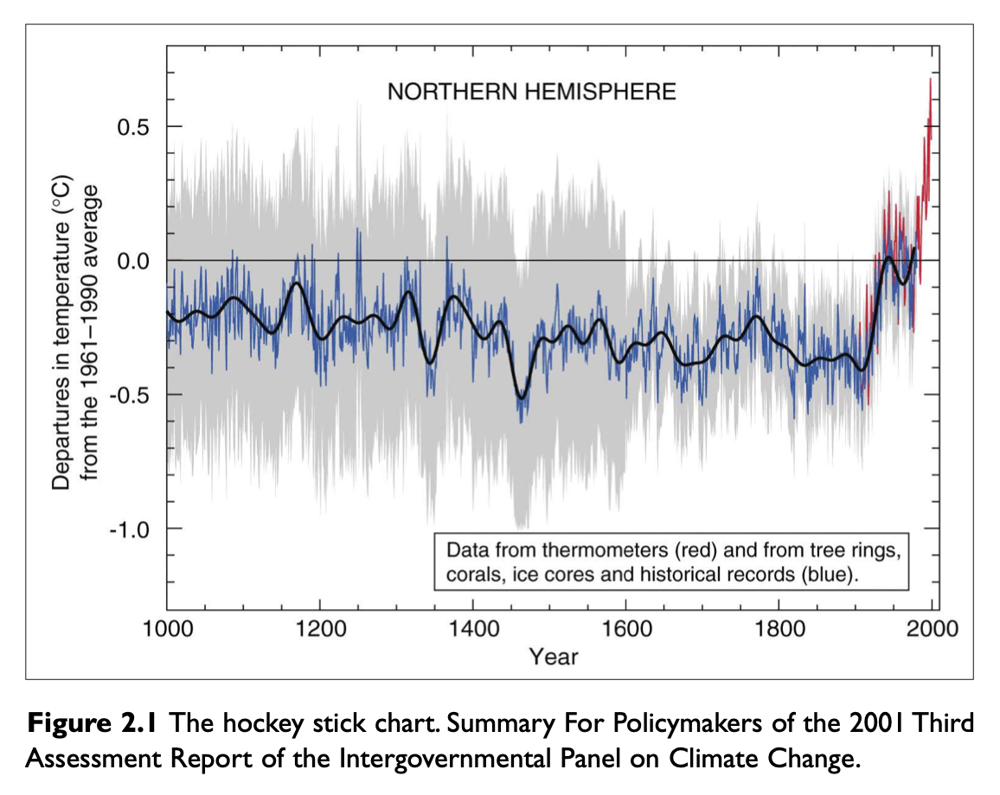Together with providing insight is providing that expected simplicity of the facts. The ethical responsibility of journalists is to not only provide the written word in verified statements, but also to illustrate them honestly and accurately. Compare the same data on the following graphs below. We notice the data presented has only one numerical data point for the readers to infer the other missing values and compare the data across the chart. It is easy to visualize using the bar chart, yet difficult to assess the difference in area in using circular graph displays. Making the distinction for the proper use case between linear (height and width) over area, which is harder to visualize, is crucial to ethical communication of the data.
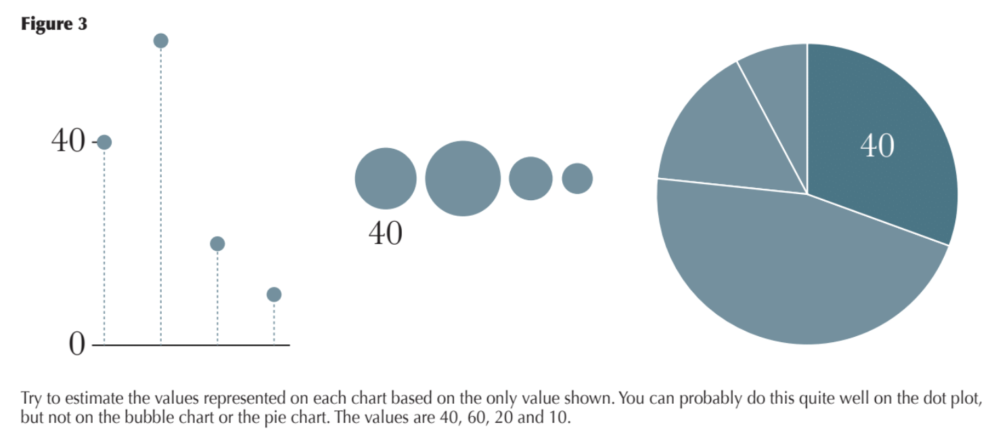BLOG ENTRY #3 | FEB. 17, 2020 | "The Truthful Art", Chapter 1
What does "data viz" and "infographics" — the title of this course — even mean? In plain, a visualization is anything that can communicate a message through visual methods. Therefore, data visualization is exactly just data that is visualized in a means for communicating the quantities or symbols for inference by the receiver. Under these data visualization terms are charts, plots, diagrams, graphs and others of the like, which may be interchangeably used depending on the context of the author. Additionally, a map is simply the same a plot or a graph, in which the coordinates of longitude and latitude determine the boundaries of the data within that region. These data visualization methods are well known for formatting with a Cartesian coordinate system, using a unique point in a plane by a set of coordinates, and differs from infographics in this aspect of pointed accuracy.
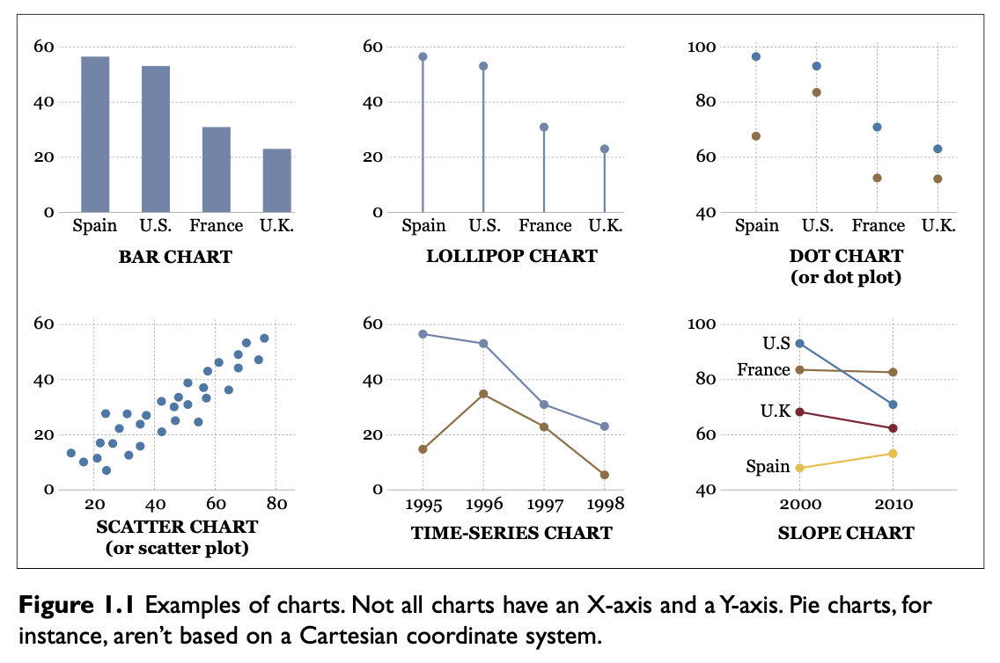Infographics differ from data visualizations as it provides a multi-layered view of information in order to communicate different aspects of the same message. Using a mix of data visualizations with illustrations and text or sound, it pvoides relevant information for the cohesive point of the author's purpose. These infographics tend to provide an increased visual appeal with the primary goal to make the general reader more informed in clear and simple illustratated narrative with supporting data. It is important for the author of these data visualizations and infographics to leave space in their work for the reader to determine their own conclusions in regards to the story provided in front of them. While the author has the job to provide the facts in a clear communication piece, the reader is ultimately responsible to use their work as a tool to make their own inferences from the provided narrative.
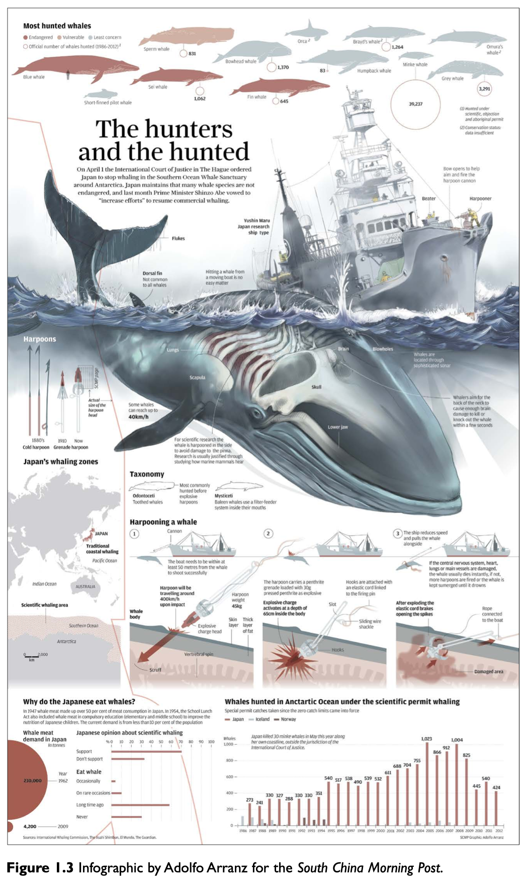BLOG ENTRY #2 | JAN. 28, 2020 | "The Truthful Art", Introduction | Article: "Finding the Right Color Palettes for Data Visualizations", Graphiq
The staggering effect of the media democratized in today's social landscape has altogether changed the vehicle for "news". What once was fact-checked and worked thoroughly for high reliability using "The Elements of Journalism" is now overpowered by the fast-paced online media commerce of influencer opinion. These "verified" (blue checkmark) source accounts are in their position for a reason, they share relevant information, and that "reach" that they have determines what makes "headlines." Nowadays, headlines are actually just the captions under a photo on Instagram and determined as valid according to the number of "likes" on the post. This is what our current democratized news system looks like, which is a bit of an extreme statement, because our foundational news institutions still exist and continue, but nevertheless this situation of distorted news digestion remains true for milennials who don't engage with traditional news. The graph below is a result of this environment, where public relation tactics of likeability, visibility, and engagement are prioritized.
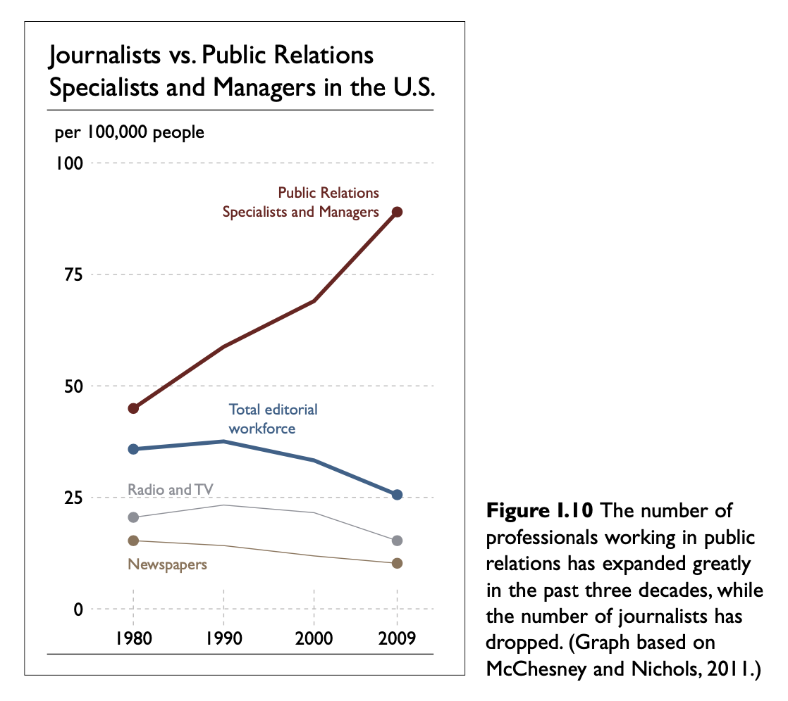As mentioned in the book, “News is a report of what a news organization has recently learned about matters of some significance or interest to the specific community that news organization serves," Jack Fuller, ex-president and publisher of the Chicago Tribune. To a great extent, that definition is what most online influencers achieve very well. To garner such popularity, they provide value to their users, and success as a result of a unique selling point, or unique creative method on their account, i.e. imagery, tone of voice, consistency, message. These influencers are people that have the power to make it a trend to include more news-worthy information. Some do by only sharing the most notorious disasters online, which become "viral" and "meme-worthy". But if they were aware of the importance that visualized data can help the regular citizen make more informed decisions in the longterm, then maybe they may realize their role has put real reporters out of jobs, and it is their responsibility to share some real facts in return for their online clout; a "Golden Rule of Social Media" to complement "The Elements of Journalism". Potentially more awareness of this need to receive facts from influencers can lead their followers, and us as a collective, to see beyond the present of immediate gratification, and begin to digest more informative materials towards a more determined future.
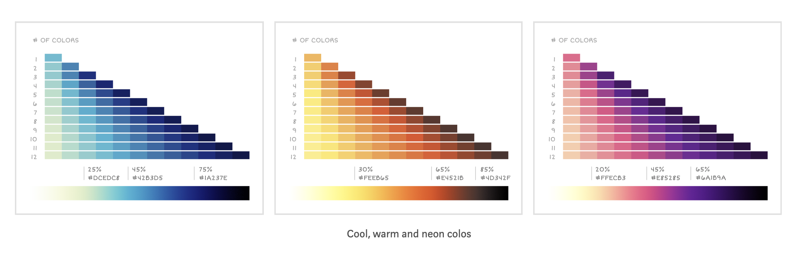These influencers can also provide visually appealing demonstrations by using best color practices that compliment their brand, make it more accessible, and provide an online tribute to the natural world through color. By informing influencers of accessiblity towards people with color blindness, they may consider how hues and brightness make an effect on these users. To consider this accessibility can make the current "data" they share more relevant to all types of people. The idea of using scenes of nature to create gradual color patterns is a skillful tool that many influencers would benefit from implementing in their practice. Applying these color practices to data in visual solutions can make it more diverse and engaging, while discerning for all users. Maybe if journalists and news organizations provided influencers with data such as this color palette information to better their online presence, then these online bloggers can be requested in return to share factual information. Potentially each news organization can partner with local influencers and make it part of the news room agenda to get their data visualizations and infographics on social media pages. Much important information gets lost on traditional media, and influencers can help make it more relevant, especially with the help of news reporters, and a rapport can begin to make the social media craze a bit more ethical.
BLOG ENTRY #1 | JAN. 21, 2020 | "How Charts Lie", Introduction and Chapter 1
As a University of Miami graduate with a bachelors in public relations, marketing and psychology, and current pursuant of an interactive media masters degree, I relate very well towards manipulating "data" or communication in words and images in a highly curated aspect for the intended audience. Whether it is a pitch for an article to a news publication, or a advertising piece to market a product, or a website designed to make a sale, it is always a somewhat altered version of the overall encompassing data in order to garner attention, engagement, or persuasion of the target user. Overall clarity of key components of the facts behind the visualization can be crucial to not lying to the target reader, for example in the illustration below.
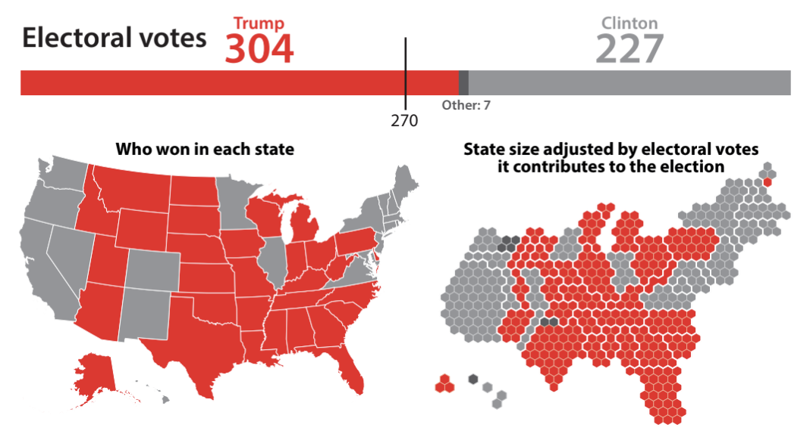The map is represented in two versions above. The first is a standard map, colored by state with majority of Democratic votes, however it is not that it lies, moreover, it is not as clear as the second version makes known of the facts. The second chart separates each state by number of electoral votes, which in fact is how Trump won the presidency, even through Clinton won the popular vote. Making clear the data in this improved manner helps the reader immensely. The author of teh chart is able to tell parts of the story, and may or may not tell the entire story. It is up to the designer to tell the story as accurately as possible while remaining truthful and allowing the users to fill in the gaps with questions or their own ideas. As in marketing, curiosity is important, and giving the user space to look for more information on their own is a good strategy, as is providing clear supporting text in paragraph or emphasized text in a visually appealing manner to provide clarity and an overall sense of the message.
The idea that we have been misled since childhood in the overgeneralized teaching point that charts must be easy to read from a quick first glance has been my mental construct, and the same for a majority of my generation, if I may. If a chart seems a bit more complex than a first glance view, I perceive it is out of my league and move on. This mental construct has not been to pay more attention to it, but rather to decide that it simply wasn't meant for me. It is outrageous how the news media has used this tactic to lead us to biased conclusions. However, it is empowering to learn that given the proper indicators, and if good design is applied, then most graphs can be accurately deciphered. Also, approaching these data visualizations almost as if engaging in a brain challenge game, or as if solving a critical thinking problem, may help us confront them as better armed for battle. For example, a new artillery trick is to mentally separate the quadrants of a chart and define what is going on in each section. It will be easier to beat these brain games by learning these types of tools, while also knowing that I am engaging in a critical thinking exercise will help it be more approachable in regards to time and effort required. By having a new point of view towards charts as brain games, and becoming prepared with tools to win, the brain will begin to get stronger by forging new connections and leaning towards newer mental constructs.
Additional References
- Ethical InfographicsCairo, Alberto. Investigative Reporters and Editors, Inc. The IRE Journal.
- Finding the Right Color Palettes for Data VisualizationsZhang, Samantha. Design Lead, Graphiq.